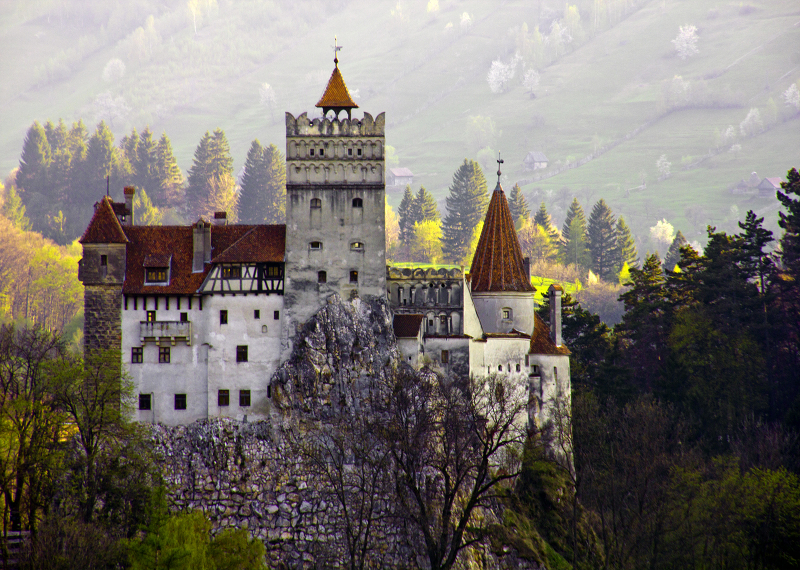

De-a lungul timpului, în spațiul geografic pe care locuiesc sau au locuit populații românești, s-au conturat mai multe regiuni istorice care în decursul istoriei au aparținut în întregime sau parțial fie voievodatelor întemeiate în secolele al X-lea (pentru Transilvania) și al XIV-lea (Moldova, Țara Românească și Dobrogea), fie statelor vecine. Limitele și denumirile acestor regiuni cunoscute și sub numele de „țări” au evoluat în decursul vremii. Parțial sau în întregime, unele dintre ele au constituit, temporar sau mai durabil, și teritoriul României. Potrivit surselor istorice, toate sunt incluse în teritoriul Daciei antice, până la perioada daco-romană (regatele lui Burebista și Decebal). România nu are nici-o revendicare teritorială asupra părților din regiunile istorice, aparținând statelor vecine.
Transilvania
Transilvania sau Ardeal este o regiune istorică și geografică situată în interiorul arcului carpatic, una din regiunile istorice ale României. De-a lungul timpului a făcut parte din Dacia, din Imperiul Roman, din Regatul Ungariei, respectiv din Imperiul Austriac. Pentru circa 170 de ani, între 1526 și 1699, a fost stat independent, sub suzeranitatea Imperiului Otoman, cu numele de Principatul Transilvaniei. În această calitate a jucat un rol însemnat în Războiul de 30 de ani, de partea coaliției protestante. Odată cu victoriile imperiale pe frontul antiotoman, Transilvania a intrat sub administrație habsburgică, dar și-a păstrat formal statalitatea până în 1867, fiind condusă de guvernatori numiți de la Viena.Despre Transilvania
Despre nume: Transilvania(din latină - "pământul dincolo de pădure") Locație: România Centrală - înconjurată de arcul lanțului munților Carpați Suprafață: 88,059 km² Populație: Aproximativ 5 milioane Orasele principale: Alba Iulia, Bistrita, Brasov, Cluj Napoca, Medias, Miercurea Ciuc, Sebes, Sibiu, Arad, OradeaLocuri de explorat in Transilvania
 Castelul Bran se situează la mai puțin de 30 km de Brașov, pe șoseaua ce iese prin vechiul cartier Bartolomeu și care leagă Brașovul de Câmpulung. Castelul Bran este construit pe o stâncă, într-un punct cheie din punct de vedere strategic. El adăpostește în acest moment muzeul Bran, muzeu ce se întinde pe cele 4 etaje ale castelului. La muzeu sunt expuse colecții de ceramică, mobilier, arme și armuri, iar în curtea castelului se află un mic muzeu al satului, cu case tradiționale din regiunea culoarului Rucăr-Bran. Cetatea Râșnov este o cetate țărănească veche din orașul Râșnov (județul Brașov). Este una dintre cele mai bine păstrate cetăți țărănești din Transilvania și a fost construită în secolele 13-14 de către locuitorii așezării cu același nume, cu scopul principal de se apăra împotriva atacurilor tătarilor. Unele dintre cele mai bine conservate orașe medievale din Europa: Brașov, Sibiu, Sighișoara Bisericile fortificate săsești din Biertan, Calnic, Harman, Darjiu, Prejmer, Saschiz, Valea Viilor și Viscri - toate desemnate de UNESCO drept situri ale Patrimoniului Mondial Cel mai bun muzeu de artă al Ardealului - Palatul Bruckenthal din Sibiu Marginimea Sibiului, o zonă situată la nord-vest de Sibiu, găzduind mai mult de 18 sate tradiționale Muzeul de icoane pictate în sticlă din Sibiel, cel mai mare de acest gen din Europa Orașul Hunedoara cu Castelul Corvinilor din secolul al XIV-lea Cetățile dacice de la Sarmisegetuza (Lista Patrimoniului Mondial UNESCO) Munții Apuseni cu ghețarii Scarisoara și Focul Viu, Peștera Urșilor Chișcău și Peștera Vârtop, precum și alte 400 de peșteri.Banat si Crisana
Banatul este o provincie istorică împărțită astăzi între România, Serbia (Banatul Sârbesc) și o foarte mică parte din Ungaria. Granițele naturale ale Banatului sunt râurile Mureș și Tisa, Dunărea și masivele Poiana-Ruscă și Retezat. Relieful Banatului este foarte divers: începând din vest, spre est, formele de relief se succed în trepte: câmpia joasă, câmpia înaltă, dealurile și, în final munții. Unele masivele muntoase bănățene constituie ramura vestică a Carpaților Meridionali. Acestea sunt, de la nord la sud, unții Țarcu cu vârfurile Țarcu-Căleanu (2190 m), Baicu (2123 m), Bloju (2192 m) și Muntele Mic (1.806 m) precum și Munții Cernei cu vârful Poiana Mare (1363 m). Munții Poiana Ruscă (1.359 m) și Munții Banatulu cu diviziunile Semenic (1.447 m), , Aninei, Dognecei, Almăjului și Locvei fac parte din Carpații Occidentali. Crișana reprezintă o regiune istorică situată pe teritoriile României și Ungariei, având ca limite naturale râul Tisa la vest, râul Mureș la sud, Munții Apuseni în est și râul Someș în nord. A fost împărțită în 1920 între România și Ungaria. Este compusă din: Județul Bihor (integral), cea mai mare parte a județului Arad și a județului Sălaj, extremitatea sudică a județului Satu Mare și extremitatea nordică a județului Hunedoara, pe teritoriul României;Despre Banat si Crisana
Despre nume: Crisana este numit dupa cele trei rauri principale din regiune: Crisul Alb, Crisul Negru si Crisul Repede. Numele Banat provine din cuvântul Ban, liderul militar al regiunii. Locul de amplasare: frontiera de vest a României - Crișana se învecinează cu Ungaria în nord, iar Banatul cu Serbia se află în sud. Populație: Aproximativ 3 milioane de persoane Orașele principale: Arad, Oradea, Timișoara Clima: Crișana are un climat temperat-continental, în timp ce Banatul are o ușoară influență mediteraneană, cu veri fierbinți și ierni blândeBucovina si Moldova
Bucovina, devenită Ducatul Bucovinei în Imperiul Austriac, este o regiune istorică cuprinzând un teritoriu de 10.441 km² care acoperă zona adiacentă orașelor Cajvana, Câmpulung Moldovenesc, Gura Humorului, Frasin, Milișăuți, Rădăuți, Siret, Solca, Suceava, Vatra Dornei și Vicovu de Sus din România, precum și Cernăuți, Cozmeni, Zastavna, Vășcăuți pe Ceremuș, Vijnița, Sadagura și Storojineț din Ucraina. Moldova Occidentală sau de Vest este un areal geografic din Moldova, de 35.806 kilometri pătrați, situat între Carpații Orientali și râul Prut, în vestul teritoriului inițial de 86.783 kilometri pătrați, deținut de către vechiul Principat al Moldovei medievale între Carpații Orientali și fluviul Nistru.Despre Bucovina și Moldova
Despre nume: Numele Bucovina înseamnă teren de fag Locul de amplasare: nord-estul României - între Munții Carpați și râul Prut. Bucovina este situată în partea de nord a regiunii Moldovei, învecinată cu Ucraina. Notă: Regiunea Moldovei (adesea menționată în presa occidentală ca Moldova) nu trebuie confundată cu Republica Moldova, vecinul ei estic. Populație: Aproximativ 4,5 milioane Orase importante: Bacau, Botosani, Galati, Iasi, Piatra Neamt, Radauti, Suceava Clima: temperat continental cu veri calduroase si ierni racoroase, cu zapada.Dobrogea
Dobrogea este un habitat istoric și geografic dintre Dunăre și Marea Neagră, care face parte din teritoriul României, Bulgariei și Ucrainei. Regiunea a fost cunoscută în antichitate sub numele de Sciția Mică, care nu desemna o provincie, ținutul făcând parte din provincia Moesia inferior iar mai apoi, în Evul Mediu, din thema bizantină Paristrion. Astăzi, din punct de vedere administrativ cuprinde în România județele Tulcea și Constanța iar în Bulgaria — regiunile Dobrici și Silistra.
Principalele orașe sunt, în nord: Constanța, Tulcea, Medgidia și Mangalia, la care se adaugă stațiunile balneo-climaterice și de vacanță de
pe litoralul românesc: Mamaia, Eforie, Costinești și stațiunile din zona Comorova a Mangaliei. Dobrogea cuprinde în partea de nord-est Delta
Dunării, habitat aflat pe lista patrimoniului mondial UNESCO.
Tulcea și Constanța iar în Bulgaria — regiunile Dobrici și Silistra.
Principalele orașe sunt, în nord: Constanța, Tulcea, Medgidia și Mangalia, la care se adaugă stațiunile balneo-climaterice și de vacanță de
pe litoralul românesc: Mamaia, Eforie, Costinești și stațiunile din zona Comorova a Mangaliei. Dobrogea cuprinde în partea de nord-est Delta
Dunării, habitat aflat pe lista patrimoniului mondial UNESCO.
Despre Dobrogea
Locul de amplasare: In sudul Romaniei - între fluviul Dunărea și Marea Neagră Populație: Aproximativ 1 milioan Orase importante: Constanta, Medgidia, Mangalia, Tulcea Clima: veri toride, ierni relativ reci și puține precipitațiiLocuri de explorat
Ruinele orasului antic Tomis (acum Constanta) - zidul sectiei, apeductele, galeriile subterane, bazilica, cripta pictata si amfiteatrul roman Ruinele orașului Callatis antic grecesc - zidul de apărare, bazilica creștină, așezarea medievală timpurie în Mangalia Histria (fondată în 657 î.Hr.), cea mai veche așezare greacă din România Statiunile de pe litoralul Mării Negre: Mamaia, Neptun-Olimp, Eforie Nord, Costinești, Mangalia Complexul calcaros subteran și biserica din cretă din Basarabi Băile cu nămol curativ pe malul lacului Techirghiol din Eforie Nord Observarea păsărilor în Delta Dunării, regiunea a peste 300 de specii de păsări, inclusiv cele mai mari colonii de pelicani Delta Dunării face o excursie cu barca cu pescarii locali atele tradiționale de pescuit din Delta Dunării, precum Sfântu Gheorghe, Mila 23, Crisan, Jurilovca și Letea Degustări de vinuri ale podgoriei Murfatlar unde se produc unele dintre cele mai bune vinuri de desert din RomâniaMaramureș
Maramureșul este o regiune geografică și etno-culturală aflată pe teritoriul României și Ucrainei, alcătuită din Depresiunea Maramureșului, aflată pe cursul superior al văii Tisei, și versanții munților care o înconjoară: Munții Oașului, Gutâi, Țibleș și Rodnei spre vest și sud, și Munții Maramureșului la est și nord. Limitele regiunii se situează între paralela 47°33' N și 48°02' N (latitudine nordică) și între meridianele 23°15' E și 25°03' E (longitudine estică).
În lungime, între Hust la Pasul Prislop sunt aproximativ 150 km iar lărgimea pe axa nord-sud de până la 80 km.
Sudul acestei regiuni aparține, în prezent, României, constituind partea de nord-est a județului Maramureș, iar partea nordică, Maramureșul
de Nord, este în estul regiunii Transcarpatia din Ucraina
Limitele regiunii se situează între paralela 47°33' N și 48°02' N (latitudine nordică) și între meridianele 23°15' E și 25°03' E (longitudine estică).
În lungime, între Hust la Pasul Prislop sunt aproximativ 150 km iar lărgimea pe axa nord-sud de până la 80 km.
Sudul acestei regiuni aparține, în prezent, României, constituind partea de nord-est a județului Maramureș, iar partea nordică, Maramureșul
de Nord, este în estul regiunii Transcarpatia din Ucraina